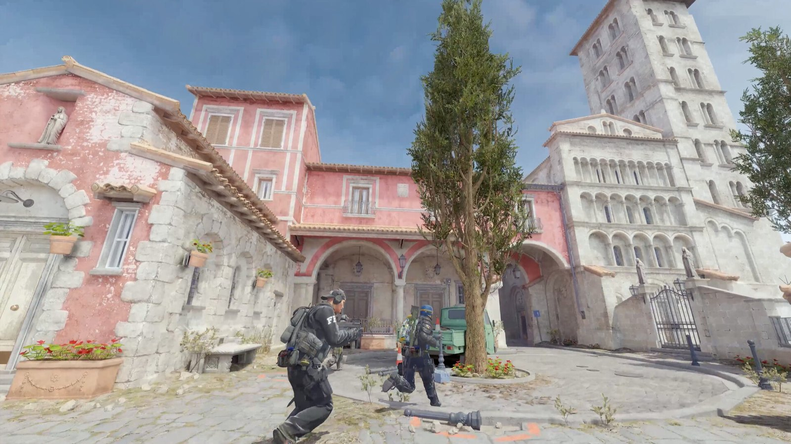
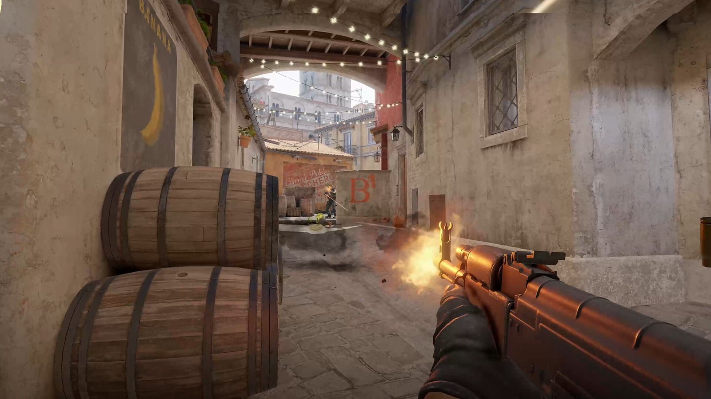

游戏：CS2
从 CS:GO 打到 CS2，这游戏算是我玩得最久的一个。表面上是射击游戏，其实更多是在打信息：对面几个人、还剩多少钱、这回合要不要保枪，都得在十几秒里想清楚。
枪法好当然有用，但队友不报点、不配合，一个人再准也很难赢。所以我玩的时候更愿意开麦，哪怕话不多。
2023 年换成 CS2 之后画面整个重做了，烟雾会飘、还能被打散，以前背下来的那些烟点基本不管用了，得重新学。



从 CS:GO 打到 CS2，这游戏算是我玩得最久的一个。表面上是射击游戏，其实更多是在打信息：对面几个人、还剩多少钱、这回合要不要保枪，都得在十几秒里想清楚。
枪法好当然有用，但队友不报点、不配合，一个人再准也很难赢。所以我玩的时候更愿意开麦，哪怕话不多。
2023 年换成 CS2 之后画面整个重做了，烟雾会飘、还能被打散，以前背下来的那些烟点基本不管用了，得重新学。

